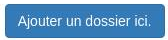

Documentation
Retour à l'application
Identification
Caroussel
Interface classique
Téléchargement des images
Changement de dossier
Interface administrateur
Importation d'image
Rotation d'image
Création de dossier
Création de dossier
Documentation
Interface administrateur
Création de dossier
×
Ceci est la documentation logiciel,
destinée aux utilisateurs de l'application. Vous y trouverez toutes les informations utiles à son utilisation.
Création
Ce bouton permet de créer un sous dossier (fils du dossier actuel) :

Il suffira de renseigner un titre
Suppression
Ce bouton permet quant à lui de supprimer le sous dossier actuel :